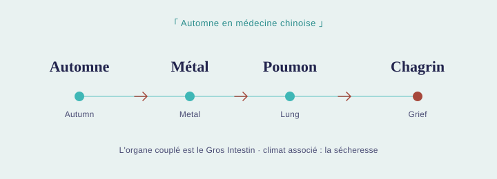

L'autre jour, en passant devant le Père Lachaise, j'ai croisé un couple visiblement en plein deuil. Ça m'a arrêtée un instant — et ça m'a fait penser à l'automne qui approche. Nous sommes encore fin septembre, il fait chaud, on se croirait presque en été. Mais le vent a changé, les nuits sont plus fraîches, le ciel se couvre plus souvent de gris. Quelque chose bouge, même si le thermomètre ne le dit pas encore vraiment.
The other day, walking past Père Lachaise Cemetery, I passed a couple who were clearly grieving. It stopped me for a moment — and got me thinking about the autumn that's coming. We're still in late September, and it's warm, almost like summer. But the wind has shifted, the nights are cooler, the sky is greyer more often. Something is moving, even if the thermometer hasn't quite caught up.
L'automne vu par la médecine chinoise
Autumn Through the Lens of Chinese Medicine
En Médecine Traditionnelle Chinoise, l'automne correspond à l'élément Métal. L'organe associé est le Poumon, avec pour organe couplé le Gros Intestin ; la qualité climatique qui lui est liée est la sécheresse ; et l'émotion qui lui correspond est le chagrin, la tristesse — ce sentiment de perte, de lâcher-prise.
In Traditional Chinese Medicine, autumn corresponds to the Metal element. Its organ is the Lungs, paired with the Large Intestine; its climate is dryness; and its emotion is grief — sadness, the feeling of loss, of letting go.
C'est aussi la saison où l'énergie se retourne : après le Yang expansif et tourné vers l'extérieur de l'été, le corps entame naturellement un mouvement vers l'intérieur, vers le Yin — un peu comme les arbres qui ramènent leur sève vers les racines. Cela invite à ralentir, à se couvrir davantage, et à ne pas lutter contre ce besoin de repli.
It's also the season when our energy turns inward: after summer's expansive, outward-facing Yang, the body naturally begins moving back toward Yin — a bit like trees drawing their sap back down to the roots. This is an invitation to slow down, dress a little warmer, and not fight that pull inward.
Le Poumon joue ainsi un double rôle en cette saison : il nous protège sur le plan physique, en soutenant notre immunité — et il est aussi, sur le plan émotionnel, l'organe le plus sensible au chagrin. En prendre soin, c'est donc prendre soin des deux à la fois.
The Lungs play a double role in this season: they protect us physically, by supporting our immunity — and they're also, emotionally, the organ most sensitive to grief. Looking after them means looking after both at once.

Prendre soin de son immunité
Looking After Your Immunity
Le Poumon est directement lié à notre immunité, et les changements de saison sont souvent le moment où les rhumes reviennent. En médecine chinoise, on parle de « vent-chaleur » ou de « vent-froid » selon les symptômes — mais dans les deux cas, le vent est vu comme ce qui ouvre la porte à la maladie. Un geste tout simple : protégez votre nuque, avec une écharpe si besoin, pour éviter que le vent ne s'y engouffre. Les exercices de respiration vont dans le même sens : ils renforcent le Poumon face à ces agressions extérieures, tout en apaisant le système nerveux — car des émotions comme le chagrin, quand elles ne sont pas accueillies, peuvent elles aussi fragiliser notre immunité. Prendre soin de son Poumon, c'est donc prendre soin à la fois du corps et des émotions.
The Lungs are closely tied to immunity, and seasonal changes are often when colds start creeping back in. In Chinese medicine, we talk about "wind-heat" or "wind-cold" depending on the symptoms — but in both cases, wind is seen as what opens the door to illness. One simple thing you can do: protect your neck, with a scarf if needed, to stop the wind getting in. Breathing exercises work in the same direction: they strengthen the Lungs against these outside stresses, while also calming the nervous system — because emotions like grief, when left unacknowledged, can weaken our immunity too. Looking after your Lungs means looking after both body and emotion.
Bien sûr, cela ne remplace pas vos habitudes habituelles pour renforcer votre immunité — plutôt un complément, une façon de soutenir le corps aussi sur le plan énergétique pendant cette transition.
This isn't a replacement for your usual seasonal immunity habits — more a complement, a way of supporting the body energetically through this transition too.
Accueillir ce qui remonte
Making Room for What Comes Up
Puisque le Poumon est aussi le siège du chagrin, il n'est pas surprenant que cette saison fasse remonter des émotions parfois inattendues. Le deuil ne concerne pas seulement la perte d'un être cher. On peut ressentir la même tristesse en quittant une maison, en perdant un objet auquel on tenait, ou en s'éloignant d'un lien social. On se dit parfois qu'il ne faut pas s'attarder là-dessus, que ce n'est « qu'un objet », que ce n'est pas grave. Mais ces émotions sont réelles, et elles méritent d'être accueillies plutôt que balayées. Le chagrin touche souvent la respiration — elle se fait plus courte, plus serrée — ce qui explique pourquoi les exercices respiratoires peuvent vraiment aider à la relâcher.
Since the Lungs are also where grief settles, it's no surprise this season can bring up emotions we don't expect. Grief isn't only about losing someone. We can feel the same sadness when leaving a home, losing something we cared about, or drifting from a social connection. We often tell ourselves not to dwell on it — that it's "just a thing," that it doesn't matter. But these feelings are real, and they deserve to be acknowledged rather than brushed aside. Grief often shows up in the breath — shorter, tighter — which is part of why breathing exercises can genuinely help release it.
Comment le Shiatsu peut vous accompagner
How Shiatsu Can Support You
Une séance de Shiatsu pendant cette période de transition peut aider le corps à retrouver son équilibre. En fin de séance, je peux vous montrer des points d'acupression, des exercices de respiration et des étirements pour renforcer le méridien du Poumon et son méridien couplé, le Gros Intestin — ou nous pouvons y consacrer une séance de Do-In à part entière.
A Shiatsu session during this transition can help the body find its balance again. At the end of a session, I can show you acupressure points, breathing exercises, and stretches to strengthen the Lung meridian and its paired meridian, the Large Intestine — or we can dedicate a full Do-In session to it.
Après un été bien rempli, l'automne est une invitation à ralentir et à prendre soin de soi autrement. C'est une transition importante — au même titre que celle de l'hiver vers le printemps — et un bon moment pour venir en séance, se recentrer, et accueillir ce qui a besoin de l'être.
After a full, busy summer, autumn is an invitation to slow down and care for yourself differently. It's a significant transition — much like the shift from winter into spring — and a good moment to come in for a session, reconnect, and make space for whatever needs it.